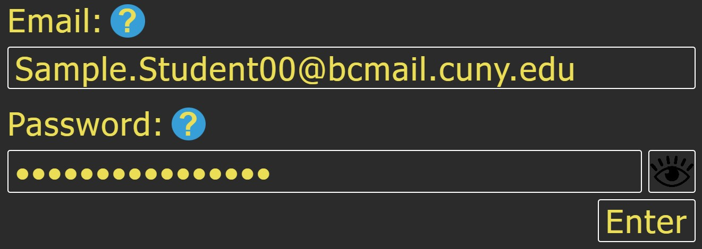

Authentication: Something One Knows
The most common type of knowledge that is used for authentication is a password, which is secret knowledge associated with one's unique identifier.
For example, to log into a website, one must present an ID and a password. The system first checks if a user of the given ID exists in the system. If so, the system will check that the password matches the existing password in the database and, if yes, let the user into their account.
Fun Class Activity: When you log into your Poll System account, you are asked to type two items: an email address and a password. Question: which one is used for identification, and which one is used for authentication?

The Poll System Website login page. Miriam Briskman, CC BY-NC 4.0.
 These notes by Miriam Briskman are licensed under CC BY-NC 4.0 and based on sources.
These notes by Miriam Briskman are licensed under CC BY-NC 4.0 and based on sources.